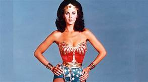

WONDER WOMAN FIGURE RÉELLEMENT FÉMINISTE
«Ce n'est pas parce qu'on voit plus de femmes, que ça veut dire qu'elles parlent plus. Le "Tais-toi et sois belle" prédomine parce que ces super-héroïnes doivent plaire à un public masculin.»

LA CRÉATION DU PERSONNAGE
Le personnage de Wonder woman fut créé en 1941 ce qui est assez tôt. Malheureusement, il faudra attendre la fin des années 70 pour qu’elle ait un programme à elle qui se nomme “Wonder Woman” et “The New Adventure of Wonder Woman”. Elle a été créée par William Moulton Marston qui s’est inspiré de sa femme Elizabeth Holloway Marston et de sa compagne Olive Bryne, pour créer ce personnage dit féministe. Il s’est aussi inspiré de Margaret Sanger (militante des droits des femmes et à l'origine du planning familial aux États-Unis) En plus du fait que ce soit un personnage féministe, il a été annoncer qu’elle était également bisexuelle ce qui semble plutôt logique puisque sur l’île d’où elle est originaire, elles ne vivent qu'entre femmes sans présence masculine ce qui favorise très fortement les relations entre femmes.
SES DÉBUTS ET SON HISTOIRE
Le personnage de Wonder Woman fait ses débuts dans le All Star Comics numéro 8 avec comme prénom Diana. Son histoire commence alors qu'un pilote de l’armée américaine s'écrase sur l'île de Paradise Island. Diana le recueil sur leur île composée que d’amazones et dirigée par la mère de Diana la reine Hippolyte. Mais ce n’est pas réellement sa fille puisque Diana a été créée à partir d’argile puis ce sont les dieux qui lui ont donné vie.
PERSONNAGE FÉMINISTE
Dans Wonder Woman, 1984 Diana est une scientifique et se peut montrer une représentation féministe du film, car les métiers plus axés sur le scientifique sont plus des métiers dit “masculin”. On peut remarquer que le personnage de Diana est très intelligent. Diana est également très sportive comme on peut voir au début du film lorsqu’elle participe à une compétition. Sa force est montrée aussi lorsqu’elle sauve Barbara alors qu'un homme l’agresse. Aussi, dans Wonder Woman 1984, Diana vit seule sans la présence d'un homme ce qui montre son émancipation et son indépendance.
FÉMINISTE ? PAS TANT QUE ÇA

Dans le film, on peut quand même voir que Barbara, un autre personnage du film de Wonder woman 1984 est appréciée par ses collègues que lorsqu'elle est jolie et bien habiller comme Diana ce qui est un peu réducteur pour l’image de la femme qui est aimée que pour son paraître et son physique. Aussi, la tenue que porte Wonder Woman est très sexualisant. Elle est très courte en bas et très moulante, cela est dû au fait que ce personnage doit plaire à un public masculin. seul moyen de plaire semblerait être en étant dénudé. Le fait que dans Wonder Woman 1984, elle sauve le monde sans trop se battre simplement en parlant au méchant, montre un personnage trop stéréotypé avec le fait que juste en parlant elle peut réussir à sauver le monde sans avoir besoin de se battre, ça fait rendre l’image du personnage faible. Lorsqu’elle se bat, c’est seulement contre la femme (Barbara) et lorsqu'ils vont essayer d’arrêter le méchant dans le char, mais encore là elle se fait aider par son amant, ce qui montre que pour s’en sortir elle a besoin d’une figure masculine.
Si vous voulez en savoir plus sur le féminisme cliquez ici